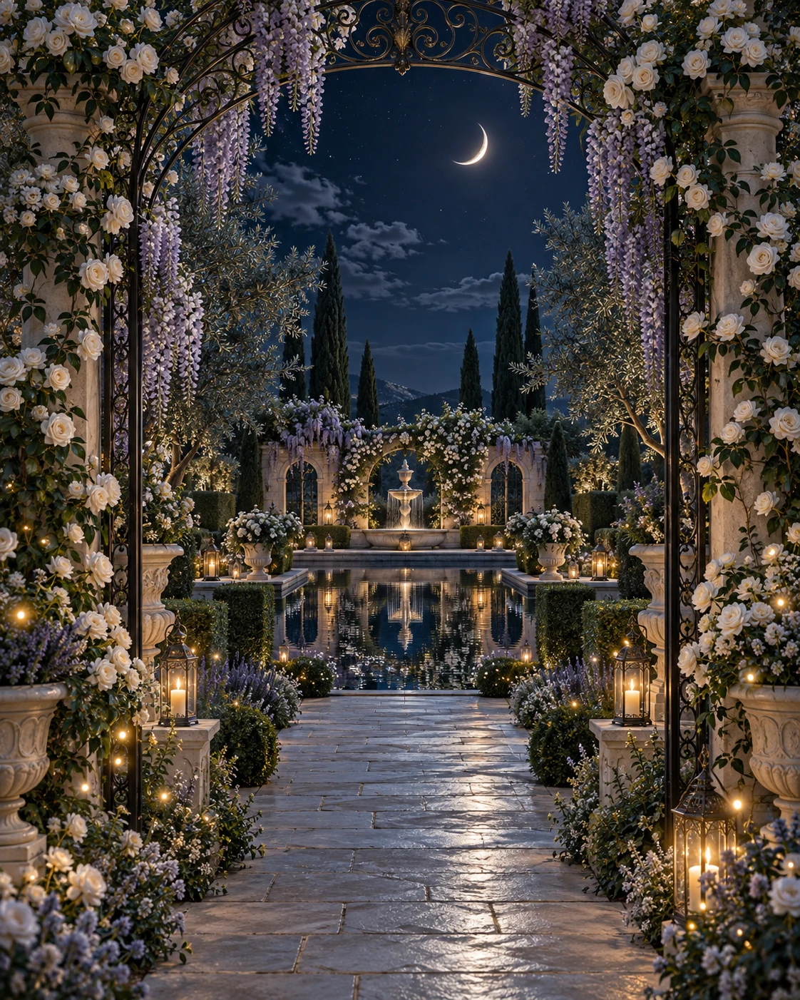

MIS QUINCE AÑOS
Valentina
Hay noches que florecen para siempre.

01
EL COMIENZO
DE UN SUEÑO
CON EL AMOR DE MI FAMILIA
Lo más bonito de crecer
es compartir el camino.
CON EL CARIÑO DE MIS PADRESValentinaEL JARDÍN ABRE EN
00DÍAS
·00HORAS
·00MINUTOS
·00SEGUNDOS
Cada instante nos acerca a una noche inolvidable.
02 / CUANDO EL CIELO SE VISTE DE FIESTA
El ritmo de nuestra noche.
03 / LAS COSAS QUE QUIERO RECORDAR
Un instante. Para siempre.
Toca las fotografías para descubrir cada detalle.
04 / EL ESTILO DE LA NOCHE
Un toque de magia.
Etiqueta
05 / EL LUGAR DONDE SUCEDE
Nos vemos en el jardín.
ABRIR UBICACIÓN ↗La ubicación exacta se compartirá próximamente.
ESTA NOCHE TIENE UN LUGAR PARA TI
¿Florecemos
este recuerdo juntos?
Confirma tu asistencia antes del .
Me encantará verte y celebrar contigo.